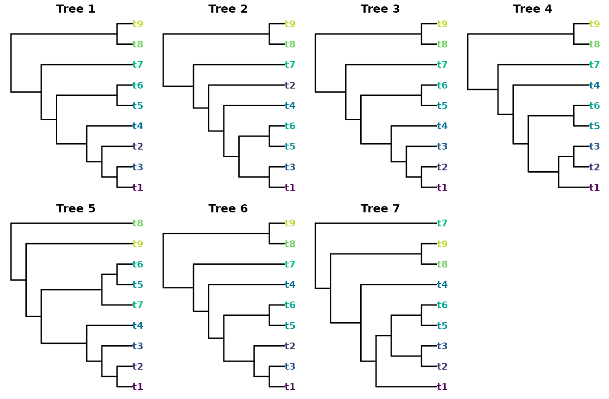
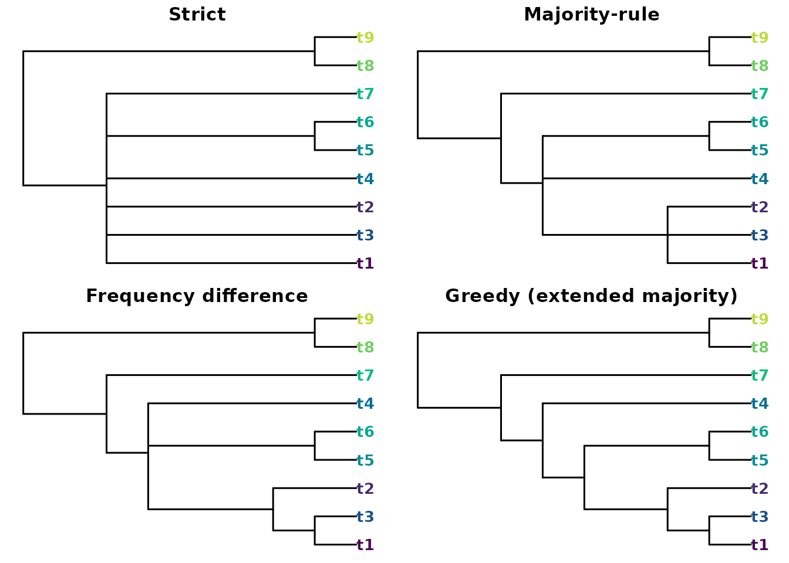
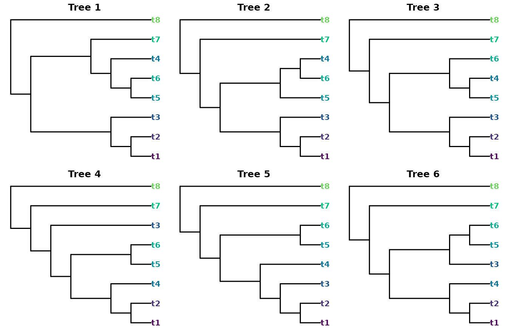
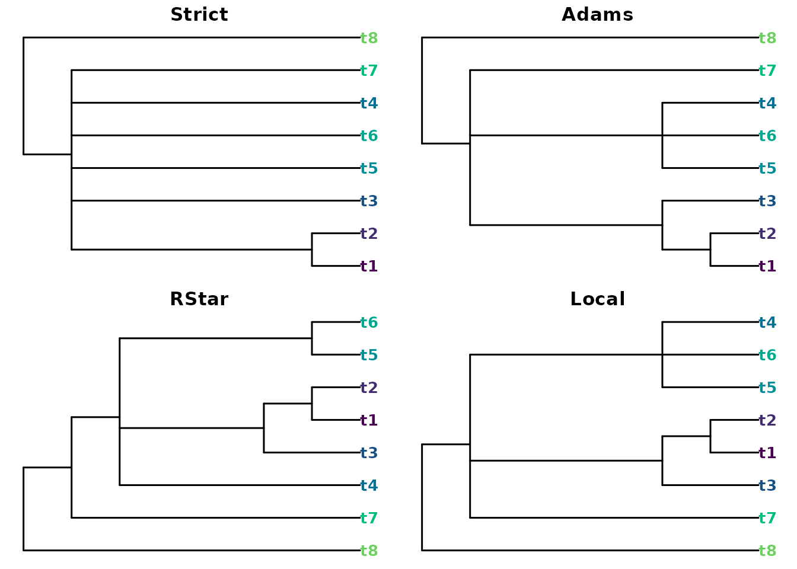
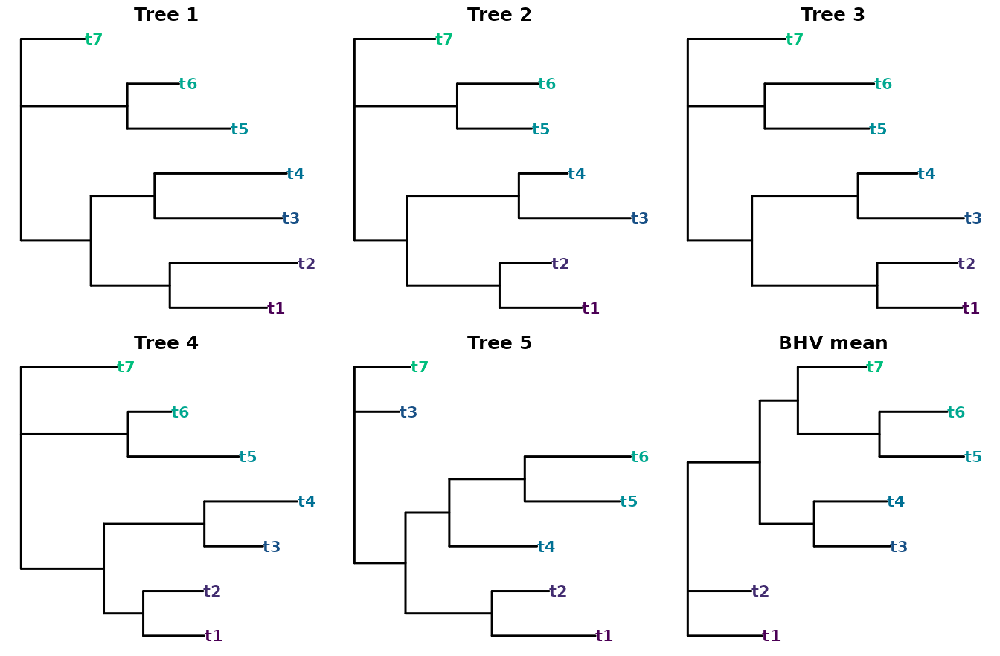

‘ConsTree’ condenses a collection of phylogenetic trees – a bootstrap or Bayesian posterior sample, say – into a single summary tree. The methods fall into two families: those that select groupings (splits or clusters) by some voting rule, and those that summarize the trees through a distance or treespace criterion.
library("ConsTree")
library("TreeTools", quietly = TRUE)Split-selection methods
The split-selection methods differ only in which groupings they keep, so they form a nested sequence of increasing resolution. To see this, take seven trees that share a backbone but disagree on the placement of a few leaves:
trees <- ape::read.tree(text = c(
"((((((t1,t3),t2),t4),(t5,t6)),t7),(t8,t9));",
"((((((t1,t3),(t5,t6)),t4),t2),t7),(t8,t9));",
"((((((t1,t2),t3),t4),(t5,t6)),t7),(t8,t9));",
"(((((t1,(t2,t3)),(t5,t6)),t4),t7),(t8,t9));",
"((((((t1,t2),t3),t4),(t7,(t5,t6))),t9),t8);",
"((((((t1,t3),t2),(t5,t6)),t4),t7),(t8,t9));",
"((((t1,((t2,t3),(t5,t6))),t4),(t8,t9)),t7);"))A consistent colour marks each leaf, so the eye can follow a leaf from one tree to the next.
nTip <- 9
leafCol <- setNames(hcl.colors(nTip + 1), TipLabels(nTip + 1))
plotCons <- function(tree, main = "") {
plot(tree, tip.color = leafCol[tree$tip.label], main = main,
font = 2, cex = 1, edge.width = 1.5)
}
oldPar <- par(mfrow = c(2, 4), mar = c(0.5, 0.5, 1.5, 0.5))
for (i in seq_along(trees)) plotCons(trees[[i]], main = paste("Tree", i))
par(oldPar)
Each method retains a superset of the groupings kept by the one before it:
data.frame(
method = c("Strict", "Majority", "Frequency", "Greedy"),
splits = c(NSplits(Strict(trees)), NSplits(Majority(trees)),
NSplits(Frequency(trees)), NSplits(Greedy(trees)))
)
#> method splits
#> 1 Strict 2
#> 2 Majority 4
#> 3 Frequency 5
#> 4 Greedy 6
oldPar <- par(mfrow = c(2, 2), mar = c(0.5, 0.5, 1.5, 0.5))
plotCons(Strict(trees), "Strict")
plotCons(Majority(trees), "Majority-rule")
plotCons(Frequency(trees), "Frequency difference")
plotCons(Greedy(trees), "Greedy (extended majority)")
par(oldPar)Strict() keeps only the two groupings present in every
tree; Majority() adds those in more than half;
Frequency() keeps a grouping that beats every grouping it
conflicts with; and Greedy() adds compatible groupings most
frequent first, giving the most resolved summary.
Two further rules apply different conflict criteria rather than a
frequency threshold. Loose() (the semi-strict, or
combinable-component, consensus) keeps every grouping that no
tree contradicts, and MajorityPlus() keeps a grouping
displayed by more trees than contradict it. Because the default
Majority() threshold (p = 0.5) admits a
grouping seen in exactly half the trees, even when the other half
contradict it, Majority() is not always a subset
of MajorityPlus().
Rooted methods
Adams(), RStar() and Local()
treat the input as rooted and reason about clusters and
rooted triplets rather than unrooted splits. They can therefore recover
structure that the unrooted strict consensus collapses:
rTrees <- ape::read.tree(text = c(
"((((t1,t2),t3),(((t5,t6),t4),t7)),t8);",
"(((((t1,t2),t3),(t5,(t6,t4))),t7),t8);",
"(((((t1,t2),t3),((t5,t4),t6)),t7),t8);",
"((((((t1,t2),t4),(t5,t6)),t3),t7),t8);",
"((((((t1,t2),t3),t4),(t5,t6)),t7),t8);",
"(((((t1,t2),t4),(t3,(t5,t6))),t7),t8);"))
oldPar <- par(mfrow = c(2, 3), mar = c(0.5, 0.5, 1.5, 0.5))
for (i in seq_along(rTrees)) plotCons(rTrees[[i]], main = paste("Tree", i))
par(oldPar)
data.frame(
method = c("Strict", "Adams", "RStar", "Local"),
splits = c(NSplits(Strict(rTrees)), NSplits(Adams(rTrees)),
NSplits(RStar(rTrees)), NSplits(Local(rTrees)))
)
#> method splits
#> 1 Strict 1
#> 2 Adams 3
#> 3 RStar 4
#> 4 Local 3The unrooted strict consensus keeps a single grouping, but the rooted methods recover more:
oldPar <- par(mfrow = c(2, 2), mar = c(0.5, 0.5, 1.5, 0.5))
plotCons(Strict(rTrees), "Strict")
plotCons(Adams(rTrees), "Adams")
plotCons(RStar(rTrees), "RStar")
plotCons(Local(rTrees), "Local")
par(oldPar)Adams() may introduce groupings present in no input
tree; RStar() keeps each rooted triplet that wins a
plurality over both alternatives; and Local() returns the
minimum local consensus of the shared triplets (limited to 20 leaves,
and best suited to congruent samples).
Distance and branch-length summaries
A second family ignores grouping frequencies and instead seeks a tree close to the sample under a chosen criterion.
The majority-rule tree has a tidy optimality property: it is the
median tree under the Robinson–Foulds metric – the tree whose
total RF distance to the sample is smallest. Quartet() is
the quartet-distance analogue, seeking (an approximation to) the tree
that minimizes the total quartet distance to the inputs instead (Takazawa et al., 2026). Because the quartet
distance gives extra weight to deep branches, the result is often
more resolved than the majority-rule tree:
c(majority = NSplits(Majority(trees)),
quartet = NSplits(Quartet(trees)))
#> majority quartet
#> 4 5When the trees carry branch lengths, two further
summaries become available. Average() returns the tree
whose path-length (patristic) distances best match the average of the
input distance matrices, while BHVMean() computes the
Fréchet mean in Billera–Holmes–Vogtmann treespace, with branch lengths;
BHVDistance(), BHVPairwiseDistances() and
BHVVariance() provide the underlying geodesic distances and
dispersion.
The Fréchet mean only resolves a grouping that the geodesics actually support. Given a sample of mutually near-random trees, every internal branch of the mean is dragged to (almost) zero length: the result is formally resolved but plots as a star, which is useless to look at. To show the method’s behaviour we instead need trees that share a backbone. Here four of five trees agree on the topology, differing only in branch length, while the fifth rearranges one clade:
blTrees <- ape::read.tree(text = c(
"(((t1:0.64,t2:0.84):0.52,(t3:0.84,t4:0.87):0.42):0.46,(t5:0.68,t6:0.34):0.70,t7:0.42);",
"(((t1:0.64,t2:0.40):0.72,(t3:0.87,t4:0.38):0.87):0.41,(t5:0.58,t6:0.63):0.80,t7:0.63);",
"(((t1:0.53,t2:0.50):0.78,(t3:0.66,t4:0.37):0.66):0.40,(t5:0.65,t6:0.68):0.48,t7:0.61);",
"(((t1:0.48,t2:0.47):0.31,(t3:0.46,t4:0.73):0.79):0.65,(t5:0.87,t6:0.34):0.84,t7:0.75);",
"(((t1:0.85,t2:0.47):0.71,(t4:0.72,(t5:0.78,t6:0.87):0.62):0.36):0.42,t3:0.37,t7:0.46);"))
meanTree <- BHVMean(blTrees)
oldPar <- par(mfrow = c(2, 3), mar = c(0.5, 0.5, 1.5, 0.5))
for (i in seq_along(blTrees)) plotCons(blTrees[[i]], main = paste("Tree", i))
plotCons(meanTree, main = "BHV mean")
par(oldPar)
BHVVariance(blTrees, mean = meanTree)
#> [1] 0.5749739The mean recovers the shared topology, but its internal branches are not simple arithmetic averages. The two groupings that every tree displays keep their full length, whereas the two that the fifth tree contradicts are pulled noticeably shorter – the geodesic to a tree that lacks a branch shrinks that branch on the way, so disagreement is expressed as shortening rather than collapse.
Choosing a method
As a rule of thumb: Strict() and Loose()
when you want only well-supported groupings; Majority() for
the familiar bootstrap summary; Frequency(),
Greedy() or Quartet() for a more resolved
picture; the rooted methods when a root is meaningful; and
Average() or BHVMean() when branch lengths
matter.
Where no constructed consensus is wanted, the ‘TreeDist’ package offers a complementary approach: it can return the sampled tree with the lowest median clustering-information distance to the rest – a single representative of the sample rather than a summary built from its parts. And the ‘Rogue’ package can first strip unstable (‘rogue’) leaves (Smith, 2022), often sharpening any of the consensus trees above.